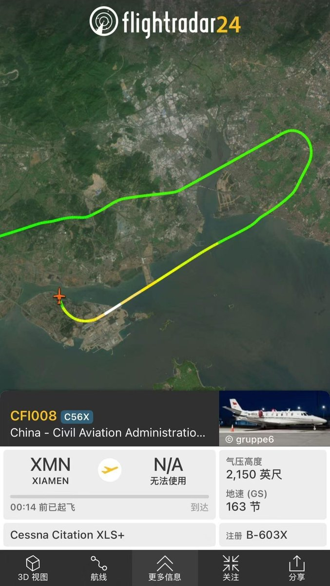
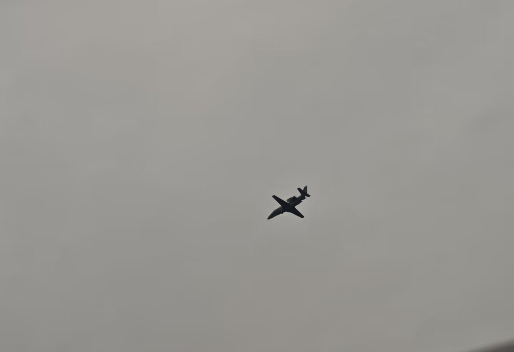

据xhs空港闲谈，厦门翔安国际机场首轮投产校飞任务，由民用航空飞行校验中心B-603X校验飞机执行。本次校飞将对机场导航台、助航灯光、飞行程序等全项科目开展检测校验，为机场后续安全平稳运行筑牢基础。
在此之前，厦门翔安国际机场航站区工程一标段、二标段等非民航专业工程已顺利通过竣工验收。待本轮校飞完成后，机场还将推进民航专业工程的竣工验收工作，此后还有真机试飞、行业验收、综合模拟演练、机场使用许可审定等多项关键环节。
据悉，厦门翔安国际机场本轮校飞周期预计将持续近一个月，叠加后续一系列验收流程，参考近年国内大型机场进度，结合过往机场案例判断，厦门翔安国际机场较难实现按照原定的今年年底12月25日完成转场通航，但不排除相关可能性，具体转场开航时间以后续官方通知为准。（北京大兴国际机场2019年1月22日启动校飞、2019年9月25日通航，耗时约八个月；成都天府国际机场2020年11月3日启动校飞、2021年6月27日通航，耗时约八个月；青岛胶东国际机场启动2020年12月1日、2021年8月12日通航，耗时约九个月；呼和浩特盛乐国际机场2025年9月5日启动校飞、至今已过去九个月仍未进行机场使用许可审定）
之前说是四月份首轮校飞，那么按原定计划年底还有可能，现在这个进度年底按计划感觉是很困难了。

在此之前，厦门翔安国际机场航站区工程一标段、二标段等非民航专业工程已顺利通过竣工验收。待本轮校飞完成后，机场还将推进民航专业工程的竣工验收工作，此后还有真机试飞、行业验收、综合模拟演练、机场使用许可审定等多项关键环节。
据悉，厦门翔安国际机场本轮校飞周期预计将持续近一个月，叠加后续一系列验收流程，参考近年国内大型机场进度，结合过往机场案例判断，厦门翔安国际机场较难实现按照原定的今年年底12月25日完成转场通航，但不排除相关可能性，具体转场开航时间以后续官方通知为准。（北京大兴国际机场2019年1月22日启动校飞、2019年9月25日通航，耗时约八个月；成都天府国际机场2020年11月3日启动校飞、2021年6月27日通航，耗时约八个月；青岛胶东国际机场启动2020年12月1日、2021年8月12日通航，耗时约九个月；呼和浩特盛乐国际机场2025年9月5日启动校飞、至今已过去九个月仍未进行机场使用许可审定）
之前说是四月份首轮校飞，那么按原定计划年底还有可能，现在这个进度年底按计划感觉是很困难了。


厦门翔安国际机场完成首个起降
B-603X完成翔安机场首次着陆后执行T/G，进行后续其他校飞工作，高崎进入倒计时…… https://t.co/AD6jrsfzP4 https://t.co/rC3w7Rix4H
B-603X完成翔安机场首次着陆后执行T/G，进行后续其他校飞工作，高崎进入倒计时…… https://t.co/AD6jrsfzP4 https://t.co/rC3w7Rix4H